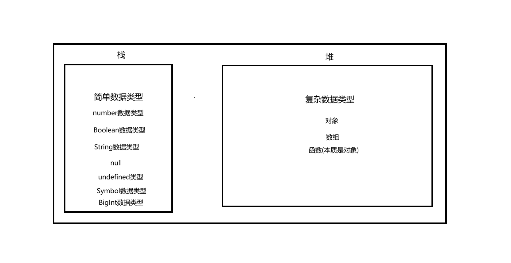
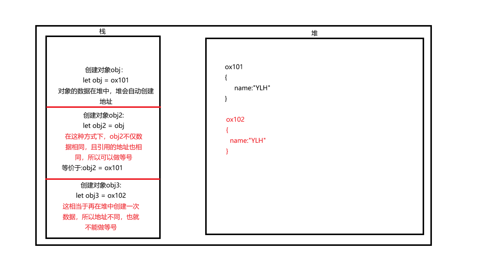
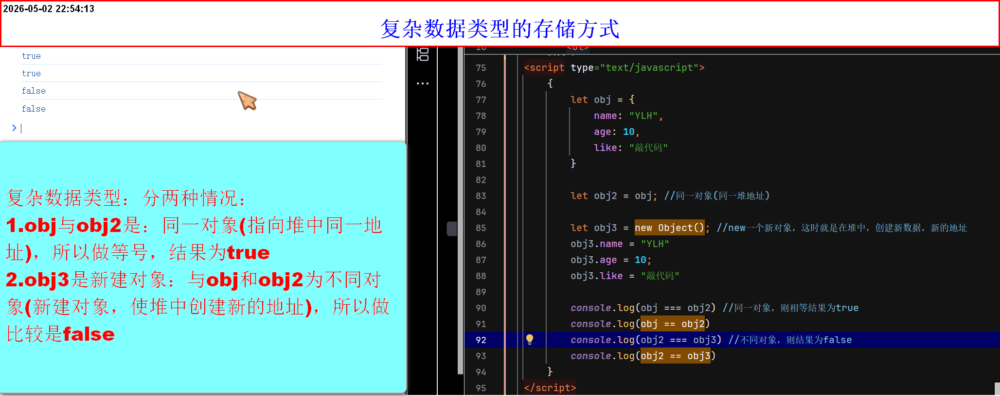
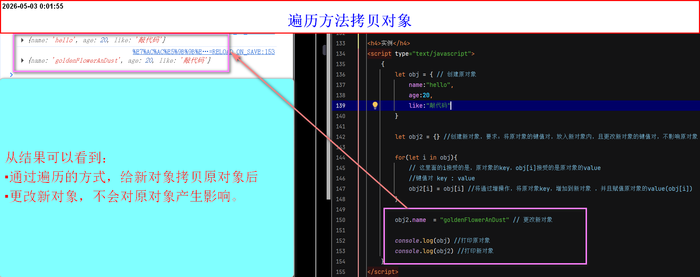

不同数据类型的存储
基本数据类型与复杂数据类型之间的区别
-
基本数据类型(字符串类型、数值类型、null、undefined、Boolean类型、Symbol数据类型、BigInt数据类型)和复杂数据类型(对象类型、数组类型、函数)之间的最大区别就是存储上的区别
Symbol数据类型:表示独一无二的值(ES6引入)
BigInt数据类型：表示大整数(ES2020引入)
函数(function)：本质是对象 - 存储空间分成两种(栈和堆)
- 栈：主要存储基本数据类型的内容
- 堆：主要存储复杂数据类型的内容
-

-
基本数据类型在内存中的存储情况
var(let、const) num = 100 , 在内存中的存储情况- 直接在栈空间内有存储一个数据
- 字面量(变量)和数据都存放在栈内
- 结论：基本数据类型，相同数据，不同字面量或变量，可以化严格相等，因为都存在栈中
-
实例
-
复杂数据类型在内存中的存储情况
- 变量(字面量)存放在栈，数据存放在堆中(并生成对应的地址)
- 访问数据，需要在栈中引用堆中的地址
- 所以，在对象类型中，给两个对象赋值相同的键值对，两个对象不能做等号(包括严格相等和双等号)
- 同一对象，不同字面量(变量)，在其中一个执行增、删、改操作，都会使其他的键值对更改，因为在同一地址下
- 结论：
1. 在同一对象下，即使字面量(变量)不同，是可以做等号的(包括严格相等和双等号)
2. 同一对象：指的是多个变量指向同一个内存地址(比如let obj = obj2，此时的obj严格等于obj2)
3. 在不同对象下，即使数据相同，也不能做等号(包括严格相等和双等号)
4. 不同对象：指的是多个变量指向不同内存地址，尽管内部装的数据是一样的 (比如:let obj = {name:"YLH"} let obj2 = {name:"YLH"}此时：引用的不是同一对象，所以不能做等号)
5.
-
实例

-
总结：
- 基本数据类型：只要值相同，则严格相等。且数据以及变量(字面量)均存储在栈内
每一个字面量(变量)都是独立的，即使初始值相同，后续更改其中一个，也不会影响其他的值。 -
复杂数据类型：分两种情况：
- 同一对象、数组、函数(本质是对象)(指向堆中同一地址)，所以比较结果为true
反推:如果多个变量指向同一个对象（即引用同一地址），那么通过任何一个变量修改该对象 （增、删、改属性），其他变量都会同步反映这些变化(这也是复杂数据类型之间true与false的本质区别) - 不同对象、数组、函数(新建对象，使堆中创建新的地址)，所以比较结果为false
- 但是数据储存始终是在：堆中
- 字面量(变量)始终存储在：栈中，通过引用地址获取数据
- 同一对象、数组、函数(本质是对象)(指向堆中同一地址)，所以比较结果为true
- 基本数据类型：只要值相同，则严格相等。且数据以及变量(字面量)均存储在栈内
-
解决需要复制(拷贝)一个对象的键值对给另一个对象
- 先说为什么需要解决：都知道多个变量引用，同一对象(同一地址)，更改其中一个，其他都会更新，这会导致数据处理困难
- 那么肯定是用新建对象这个方法最好，因为新建对象意味着新建地址
- 那么问题来了：如果原对象的键值对少，只有十几个，辛苦一点，复制粘贴即可，但是如果是100多个或更多，通过直接增操作，太过麻烦了
- 所以可以通过遍历的方式(
for....in)，挨个添加，本质还是将原对象的键值对复制或拷贝，到新对象 - 因为这种方式是浅拷贝(只对基本数据类型有效)，如果原对象内存在子复杂类型，那么拷贝的是地址，所以同样继承了，复杂数据类型之间true的弊端
-
实例
